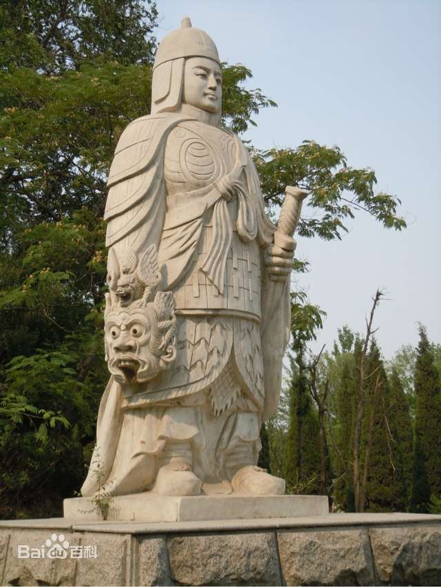
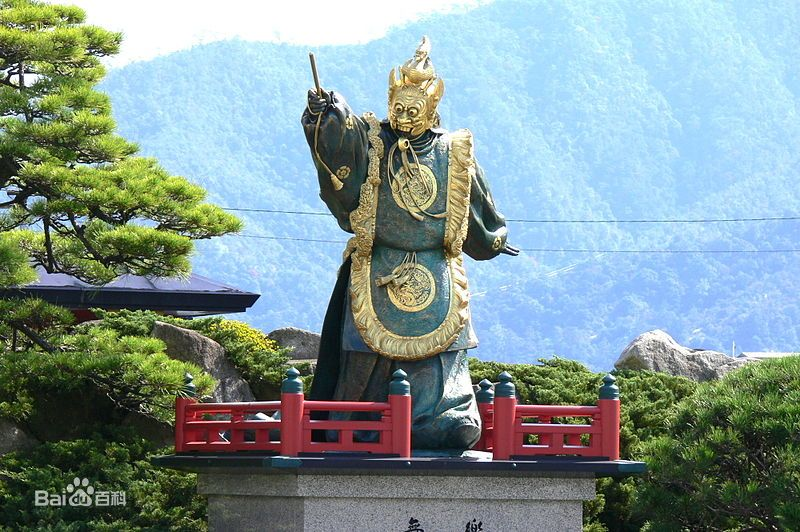

<!DOCTYPE html>
<html lang="zh-CN">

<head>
    <meta charset="UTF-8">
    <meta name="viewport" content="width=device-width, initial-scale=1.0">
    <title>兰陵王人物介绍</title>
</head>

<body>
    <style>
        h1 {
            display: inline-block;
        }
        hr {
            border: 1px solid;
        }
        body {
            font-family: 'Franklin Gothic Medium', 'Arial Narrow', Arial, sans-serif;
        }
        h1,h2,h3,h4{
            color: rgb(238, 13, 13);
        }
    </style>

</body>

</html>
<h1>高长恭</h1> <strong>（北齐宗室名将、兰陵王）</strong><br>
<h2>目录</h2>
<a href="#1">1 人物简介</a>&nbsp;&nbsp;
<a href="#2">▪ 简介列表</a>&nbsp;&nbsp;
<a href="#03">▪ 人物图片</a><br><br>
<a href="#3">2 人物生平</a>&nbsp;&nbsp;
<a href="#4">▪ 早年经历</a>&nbsp;&nbsp;
<a href="#5">▪ 金墉解围</a>&nbsp;&nbsp;
<a href="#6">▪ 历封郡公</a>&nbsp;&nbsp;
<a href="#7">▪ 君臣相忌</a>&nbsp;&nbsp;
<a href="#8">▪ 冤屈遭鸩</a><br><br>
<a href="#9">3 主要成就</a><br><br>
<a href="#10">4 人物评价</a>&nbsp;&nbsp;
<a href="#11">▪ 史书评价</a>&nbsp;&nbsp;
<a href="#12">▪ 历代评价</a><br><br>
<a href="#13">5 轶事典故</a>&nbsp;&nbsp;
<a href="#14">▪ 同甘共苦</a>&nbsp;&nbsp;
<a href="#15">▪ 宽宏大量</a>&nbsp;&nbsp;
<a href="#16">▪ 知足不贪</a>&nbsp;&nbsp;
<a href="#17">▪ 不计私怨</a>&nbsp;&nbsp;
<a href="#18">▪ 齐王赐妃</a>&nbsp;&nbsp;
<a href="#19">▪ 收子义侠</a><br><br>
<hr>
<section>
<h2 id="1">1 人物简介</h2>
<p>
    兰陵王高长恭（541年—573年），本名高肃，族名高孝瓘，字长恭，渤海蓨县（今河北景县）人。北齐王朝宗室名将，神武帝高欢之孙，文襄帝高澄第四子，中国古代四大美男之一，兰陵王。
    温良敦厚，貌柔心壮，音容兼美。起家通直郎、仪同三司。治军躬勤细事，累迁并州刺史，封乐陵县公。废帝高殷即位后，以为兰陵王，历任尚书令、录尚书事、大司马、太保、太尉等。联合段韶征讨柏谷，攻打定阳。平原王段韶患病后，总领部众。凭借军功，历封钜鹿、长乐、乐平、高阳等郡公。河清二年（563年），突厥攻入晋阳时，奋力将兵退敌。邙山之战时，拜中军将军，头戴面具，率领五百骑兵突破北周军包围圈，成功解围金墉城。从此，威名大振，士兵讴歌赞颂，即《兰陵王入阵曲》。
    随着权位扩大和威望上升，受到北齐后主嫉妒和猜忌。武平四年（573年），因言“国事即家事”，坐罪鸩死，时年三十三岁，追赠假黄钺、太师、太尉公，谥号忠武。
</p>
<h3 id="2">▪ 简介列表</h3>
<table>
    <tbody>
        <tr>
            <th>本&nbsp;&nbsp;&nbsp;&nbsp; 名</th>
            <td>高长恭</td>
            <th>去世时间</th>
            <td>573年</td>
        </tr>
        <tr>
            <th>别&nbsp;&nbsp;&nbsp;&nbsp; 称</th>
            <td>兰陵王、高孝瓘、高肃</td>
            <th>主要成就</th>
            <td>邙山大捷、白狼城之战</td>
        </tr>
        <tr>
            <th>字&nbsp;&nbsp;&nbsp;&nbsp; 号</th>
            <td>长恭</td>
            <th>祖&nbsp;&nbsp;&nbsp;&nbsp; 籍</th>
            <td>渤海蓨县</td>
        </tr>
        <tr>
            <th>所处时代</th>
            <td>北齐</td>
            <th>爵&nbsp;&nbsp;&nbsp;&nbsp; 位</th>
            <td>兰陵王</td>
        </tr>
        <tr>
            <th>民族族群</th>
            <td>汉族</td>
            <th>官&nbsp;&nbsp;&nbsp;&nbsp; 职</th>
            <td>大司马、太保</td>
        </tr>
        <tr>
            <th>出生时间</th>
            <td>541年</td>
            <th>谥 &nbsp;&nbsp;&nbsp;&nbsp;号</th>
            <td>忠武</td>
        </tr>
        <tr>
            <th>追&nbsp;&nbsp;&nbsp;&nbsp; 赠</th>
            <td>假黄钺、太师、太尉公</td>

        </tr>

    </tbody>
</table>
<h3 id="03">▪ 人物图片</h3>
<h4>兰陵王雕像</h4>

<h4>兰陵王在影视剧中的形象</h4>


<h4>日本严岛神社的兰陵王塑像</h4>

</section>
<hr>
<section>
    <h2 id="3">2 人物生平</h2>
    <h3 id="4">▪ 早年经历</h3>
    <p>
        东魏兴和三年（541年），高长恭出生，是东魏权臣高欢孙子、高澄第四子，生母不详。早年仕途经历远不如其兄弟。
        直到天保八年（557年），方才起家被授为通直散骑侍郎。天保九年（558年），封乐城县开国公，进上仪同三司。
        天保十年（559年），加授仪同三司，开始出任地方官，以本官行肆州事。高洋死后，高殷即位。北齐乾明元年（560年）三月二十一日，
        高长恭受封兰陵王。后来累次升迁至并州刺史。在乾明之变后，皇叔孝昭帝高演登基，给予兰陵王高长恭进一步重用，
        邑通前一千五百户，转中领军，加开府仪同三司。武成帝高湛即位之后，大宁元年（561年），被授使持节都督并州诸军事、
        并州刺史。大宁二年（562年），别封巨鹿郡开国公，食邑一千户，进领军将军。
    </p>
    <h3 id="5">▪ 金墉解围</h3>
    <p>
        河清二年（563年），北周大将杨忠与突厥木杆可汗合兵自恒州而下攻北齐，直逼并州，高长恭参与了击退突厥的作战，奋力将突厥人击退。
        阳救援，因为惧怕北周的兵力强大，不敢前进。段韶利用谋略打败北周军队，高长恭带领五百名骑兵冲进北周军队的包围圈，
        到了金墉（今河南洛阳东北故城）城下，因为高长恭戴着头盔，城中的人不确定是敌军或是我军，
        直到高长恭把头盔脱下来让大家看到他的面貌，城上的人才派弓箭手开始放箭保护他，之后高长恭成功替金墉解围，
        北周军队最后放弃营帐逃走，从邙山到谷水的三十里间的川泽之地，都是北周丢弃的兵器辎重。河清三年（564年）十二月，
        邙山之战时，北周攻打洛阳，武成帝高湛派高长恭与并州刺史段韶、大将军斛律光前往洛
        高长恭在此次场战役中威名大振，士兵们为此次战役而讴歌他，即后来知名的《兰陵王入阵曲》。
        同年十二月十五日，高长恭被任命为尚书令。
    </p>
    <h3 id="6">▪ 历封郡公</h3>
    <p>
        后来，历任司州、青州、瀛州的地方长官。 武平元年（570年）七月初三日，担任录尚书事。 武平二年（571年）二月二十四日，担任太尉。
        三月，北周齐国公宇文宪从龙门渡过黄河，右丞相斛律光退守华谷，宇文宪攻取了斛律光新筑的五座城池。高长恭与太宰段韶、右丞相斛律光联合进攻跷谷，率军抵御北周的军队，进攻柏谷城，攻克后就退兵而回。
        武平二年（571年）五月，北周晋国公宇文护派中外府参军郭荣在姚襄城南、定阳城西修筑城池。六月，段韶包围定阳城，当时段韶生病，对高长恭说：“这座城池的三面都有两道河壕，无路可走；恐怕只有东南一条路，贼寇一定会从这里突围。应当挑选精兵专门防守这条道路，这样一定能够捉住他们。”高长恭便派一千多名壮士埋伏在东南涧口。城中的粮食吃尽，宇文宪集中所有的兵力去救援，但因害怕段韶，不敢前进。杨敷率领现有的士兵乘夜突围出城，被高长恭的伏兵攻击，全部俘虏。

        武平三年（572年）八月，高长恭被任命为大司马。 武平四年（573年）四月十三日，担任太保。 高长恭前后因各项战功，被封为巨鹿郡公、长乐郡公、乐平郡公、高阳郡公等。
    </p>
    <h3 id="7">▪ 君臣相忌</h3>
    <p>
        在邙山之战后，北齐后主高纬对高长恭说：“这样冲进敌阵之中，如果不小心发生意外怎么办？”高长恭回答说：“国事就是我们的家事，在战场上我不会想到这个。”而后主高纬因为他说的“家事”，又听到士兵们唱的《兰陵王入阵曲》，便开始猜忌高长恭。
        定阳之战时，高长恭代替段韶的职务统
        日本严岛神社的兰陵王塑像
        日本严岛神社的兰陵王塑像
        率军队，但是常常收取贿赂，聚敛财物，他的亲信尉相愿问他说：“大王受到朝廷的重托，为什么要如此贪心呢？”高长恭没有回答。尉相愿继续说：“是不是因为邙山之战大胜，您害怕功高震主，遭受忌妒，而要作令人看不起的事情呢？”高长恭回答说是。尉相愿说：“朝廷如果忌恨你，这件事情更容易被当成是罪名，这不是躲避灾祸而是招来灾祸！”高长恭哭着俯身向尉相愿询问解决的计策，尉相愿说：“您之前已经立下战功，这次依然打胜仗，声望太大，最好假托有病在家，不要再管国家的政事。”高长恭听从他的计策，但是没有办法成功隐退。
        等到朝廷对陈朝用兵，高长恭恐怕再次被任命将军，叹息说：“我去年脸上长痈，现在为什么不发出来！”从此有了病也不肯医治。
    </p>
    <h3 id="8">▪ 冤屈遭鸩</h3>
    <p>
        武平四年（573年）五月，后主高纬派遣使者徐之范送毒酒给高长恭，高长恭对他的王妃荥阳郑氏（兰陵王妃）说：“我对国家如此忠心，哪里有辜负皇帝，而要赐我毒酒？”郑氏回答说：“为什么不亲自当面去跟皇帝解释呢？”高长恭说：“皇帝怎么可能会见我？”于是就饮鸩而死，
        年仅三十三，追赠太尉，谥号武。
    </p>
</section>
<hr>
<section>
    <h2 id="9">3 主要成就</h2>
    <p>
        高长恭在军事上的成就在于他参与了北齐后期与北周的历次大战，并数次击退北周进攻。河清二年（563年），
        北周大将杨忠联合突厥自恒州而下攻打北齐，突入晋阳（今山西太原），晋阳为北齐北方军事重镇，高长恭亲自参与了击退北周和突厥军队的作战，
        奋力将北周大将杨忠击退。次年十二月，邙山之战时，北周攻打洛阳，武成帝高湛派兰陵王高长恭与并州刺史段韶、大将军斛律光前往洛阳救援，
        高长恭带领五百名骑兵冲进北周军队的包围圈，到了金墉（今河南洛阳东北故城）城下，高长恭成功替金墉解围，北周军队最后放弃营帐逃走，
        从邙山到谷水的三十里间的川泽之地，都是北周丢弃的兵器辎重。 根据《北齐书》的记载，这次战役后，高长恭开始声名远扬，
        士兵们为此作曲讴歌他，即后来知名的《兰陵王入阵曲》。
    </p>
</section>
<hr>
<section>
    <h2 id="10">4 人物评价</h2>
    <h3 id="11">▪ 史书评价</h3>
    <p>
        《北史》：文襄诸子，咸有风骨。虽文雅之道，有谢（萧）何、（陈）平。然武艺英姿，多堪御侮。纵咸阳赐剑（白起），歼覆有徵。若使兰陵获全，未可量也。而终见诛翦，以至土崩，可为太息者矣。
    </p>
    <h3 id="12">▪ 历代评价</h3>


    <ul>
        <li>北齐安德王高延宗在邙山战后说：“四兄非大丈夫，何不乘胜径入？使延宗当此势，关西色得复存？”</li>
        <li>段安节：戏有代面，始自北齐。神武帝有胆勇，善斗战，以其颜貌无威，每入阵即着面具，后乃百战百胜。</li>
        <li>崔令钦：兰陵王长恭性胆勇，而貌若妇人。</li>
        <li>叶廷珪：北齐兰陵王体身白哲而美风姿，乃着假面以对敌，数立奇功。</li>
        <li>蔡东藩：“长恭一死，亲王中又少一勇将了。自折手臂，亡在日前。”</li>
        <li>毛泽东：“南北朝兰陵王是高欢的孙子，叫高孝瓘，也是年轻人，很能打仗，很勇敢。”</li>
        <li>孔令德于河北磁县的兰陵王墓前所作长联：凭吊当年名将，肝胆照河山，戍紫津玄塞，荒原野祷，邙山突围，西境御敌，定阳擒贼。
            <br> 怎奈无辜于天反遭鸩，一代柱国遗憾恨。追忆昔日王勋，英风贯日月，为文韬武略，帅威臣廉，功高弗傲，富贵不淫，债契何讨，但有大德行地而称颂，千载兰陵享春秋。</li>
        <li>李文珊：“（兰陵王）“战功卓著，深受将士和民众拥戴”，“与一代名将的英名同彪史册。”</li>
        <li>马忠理：“（兰陵王为）北齐皇族众王子中的佼佼者，是北齐末期文武双全的大将。”</li>
        <li>刘学铫：“貌美而武艺高强，作战则勇冠三军。”</li>
        <li>胡胜源：“（兰陵王为）北齐晚期最杰出的将领。”</li>
        <li>王怡辰先生认为兰陵王“军功卓著”，对北齐后主而言是“极可怕的人物”。</li>
        <li>当代作家梅毅：“兰陵王虽勇猛绝伦，智力超常，但由于不是嫡子正统，所以后世记载相对较少，但很多野史根据‘免胄示之面’一句，
            <br> 演绎出兰陵王因长相俊美、惟恐在战场上无法威慑敌军的说法，则颇有想当然的成分，虽然北齐皇族高家是鲜卑化的汉人，
            <br> 不乏各民族通婚，从而出现英俊混血儿的可能性，但史书对于兰陵王生母并无记载，以一句孤证推断并不严谨。”</li>
    </ul>
</section>
<hr>
<section>
    <h2 id="13">4▪ 轶事典故</h2>
    <h3 id="14">▪ 同甘共苦</h3>


    高长恭貌柔心壮，音容兼美。为将勤于军事，每次得到一些瓜果，必与将士们分享。
    <h3 id="15">▪ 宽宏大量</h3>
    高长恭曾经一次入朝，仆从全部走散了，只剩下他一人，高长恭独自反还，并没有责罚仆从。
    <h3 id="16">
        ▪ 知足不贪
    </h3>
    <p>
        武成帝奖赏高长恭的功劳，命贾护为高长恭买妾二十人，高长恭只要了一个。高长恭有数额达千金的债卷，临死之日全部烧掉。
    </p>
    <h3 id="17">
        ▪ 不计私怨
    </h3>
    <p>
        起初在瀛州，行参军阳士深上表列举高长恭的贪赃之事，导致他被免除官职。讨伐定阳的时候，高长恭为帅，阳士深在军中担心灾祸到来。高长恭听说此事说：“我本来就没有报复的意思。”于是找了个小小的过失，仅对阳士深处以杖二十的薄惩使他安心。
    </p>
    <h3 id="18">
        ▪ 齐王赐妃
    </h3>
    <p>
        高长恭功高盖主，胡太后怕他夺了自己儿子的帝位，就以皇帝的名义，将一个叫张香香的妃子赐给他，目的是刺杀他。张香香天姿国色，使尽百般手段，高长恭却格守君臣之礼，不为所动。半年过去，她不仅没有刺杀高长恭，反而被他忠心报国的行动所感动，讲出了胡太后的阴谋。胡太后大怒，要招回张香香加以杀害。高长恭却在这一过程中爱上了这位美丽善良的女子，真的收她为妾了。
    </p>

    <h3 id="19">
        ▪ 收子义侠
    </h3>
    <p>
        义侠赵五本是洛阳胡太守的杀手，几次奉命暗杀高长恭未逞。一次，他到京城给胡太守的堂兄胡国舅送信，得知他们暗中勾结敌将陷害高长恭的真情和阴谋杀害兰陵王的计划，便暗中潜往伏地。当伏兵冲出，他飞刀杀死用弓箭瞄准高长恭的射手，从空中抽走奉旨官怀中的镇国宝剑，杀败伏兵，将镇国宝剑交还高长恭。高长恭敬佩他深明大义，不计前嫌，收为义子。
    </p>
</section>